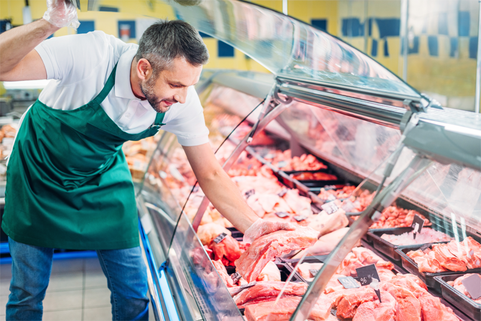
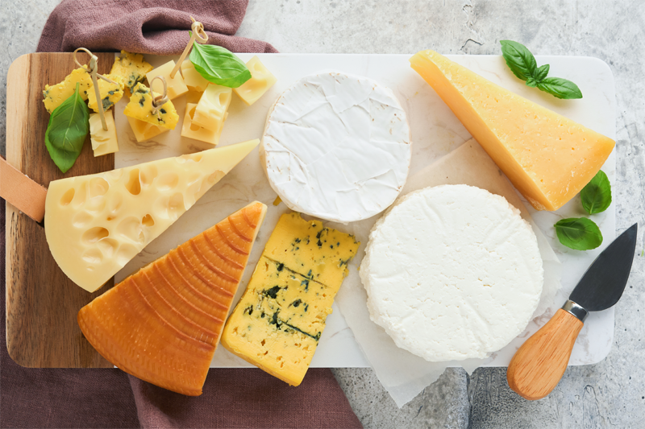
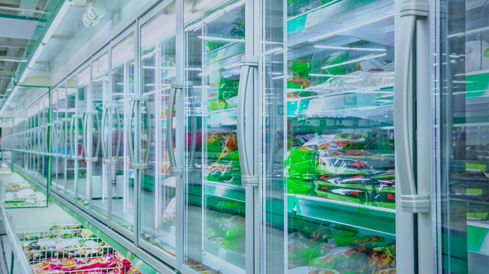
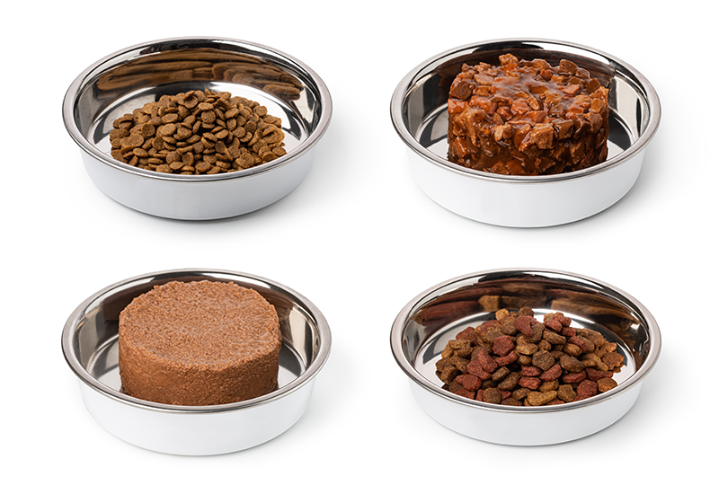
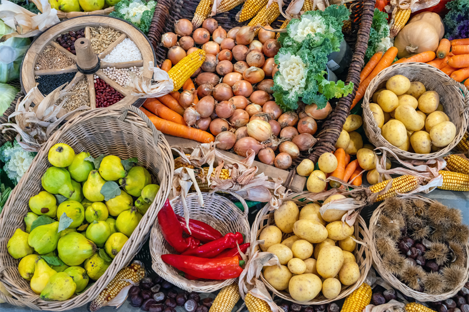
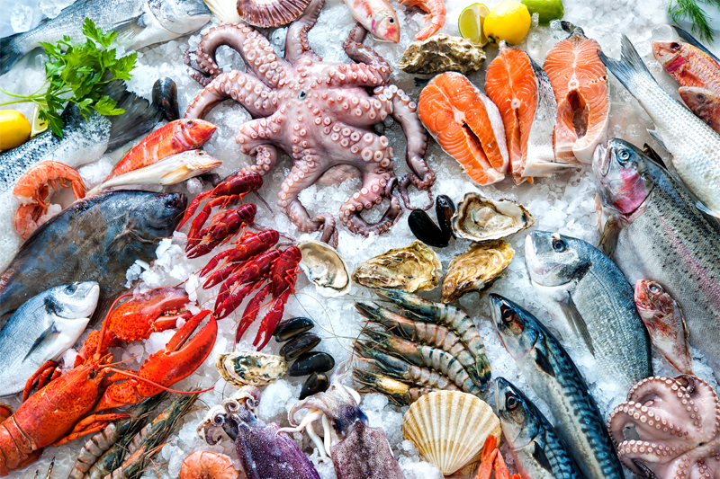
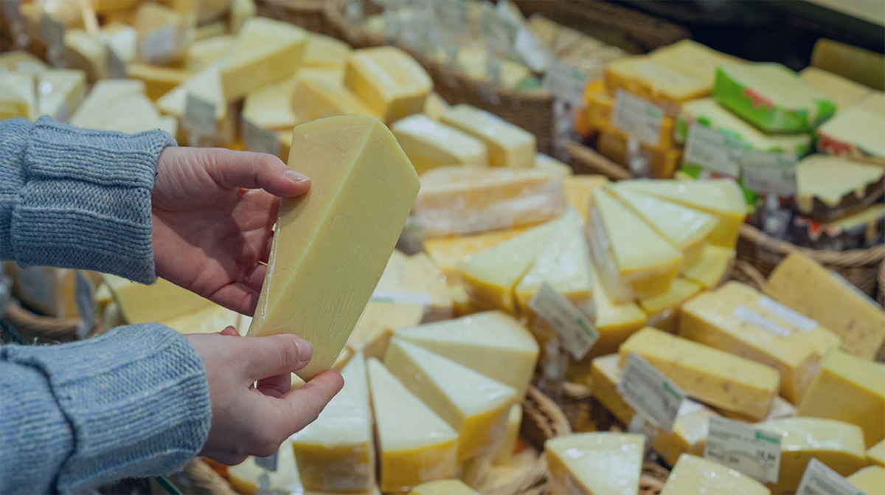

Protein
Chicken nuggets, jerky, raw beef trim, sausage patties, formed burgers, and prepared protein trays often combine contaminant risk with density variation.
Industries
GreyscaleAI helps food producers detect foreign material, monitor inspection activity, understand product quality, and see what is happening across lines and plants.
Priority applications






A top 10 protein processor reduced investigation time by 90% after moving from reject-only inspection to image-backed event review and line visibility.
Common production needs

Application examples
Chicken nuggets, jerky, raw beef trim, sausage patties, formed burgers, and prepared protein trays often combine contaminant risk with density variation.
Blocks, shreds, slices, wedges, and sealed dairy formats often need both foreign material review and package-quality visibility.
Mixed meals, snacks, and bagged products can require count checks, breakage review, and better traceability around rejects.
Kibble, treats, frozen raw formats, and mixed products can need event history, contaminant review, and recurring trend visibility.
Cut produce, salads, frozen vegetables, and fruit blends often bring moisture, natural variability, and package-aware inspection needs.
Pouched, bottled, or tray-packed goods often need strong documentation, searchable image history, and enterprise-ready reporting.
Next step